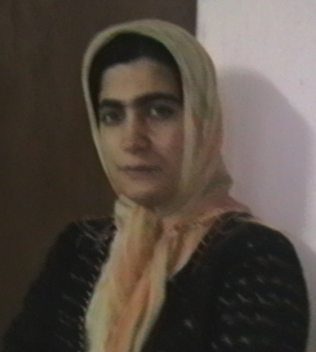

پذيرش > مقالات > تاریخ شفاهی > و جان صغرا چه کم بها است
 پشت دیوار های زندان: پشت دیوار های زندان:

 و جان صغرا چه کم بها است و جان صغرا چه کم بها است
16 مرداد 1387 - زهره اسد پور - نسخه قابل چاپ
سرتا پا سیاه پوشیده است، آرام و با تانی با دستهایی که در پشت قلاب کرده، قدم می زند...بارها وبارها و بارها طول حیاط را می پیماید . میانه ی تابستان 78 است ؛بر لبه ی باغچه ی کوچکی گوشه ی حیاط نشسته ام ؛ موشها گله به گله باغچه را کنده اند و در باغچه جولان می دهند .
او همچنان سر تا پا سیاه می آید و می رود؛ هواخوری اجباری زندان ، بند عمومی نسوان در میانه ی روز در هرم گرمای مرداد رشت زندانبانان زنان را از بندها بیرون می کنند و به حیاط می رانند . زنان غرولند می کنند اما او همچنانت آرام آرام می آید و می رود، شاید به بهانه ی لبخندی که بر لبانم دیده است کنارم می نشیند ،شنیده ام که جرمش قتل عمد است و حکمش اعدام ؛ و او آرام آرام برایم از سالها پیش سخن می گوید از سالهایی که مدرسه نرفته است و به عنوان خدمتکار در خانه ای در رشت مشغول به کار بوده است و دستمزد او سالی دو گونی برنج به خانواده جنگل نشین بی چیزش .
در 13 سالگی اش در حادثه ای کودک 9 ساله ی خانواده کشته می شود دخترک علیرغم انکارهای فراوانش و علیرغم مدارک فراوانی که در پرونده وجود داشته ، بر اساس بازپرسی های فنی ! پلیس به اعدام محکوم می شود.
از شب انفرادی پیش از اجرای حکم می گوید از سکوت غمبار زندان و زندانیان و زندانبانان که می دانند صغرای محبوبشان آخرین طلوع صبح زندگیش را در پیش دارد. از فریادهایی که التماس می کنند تا صغرا را به قتلگاه نبرند و لحظه ی شوم انتظار برای طناب دار واجرا نشدن حکم و سالها انتظار کشنده، انتظار سرنوشتی که تردیدی ندارد دار خواهد بود.

مرد در مغازه هایش نشسته است ، وارد می شوم چند روزی از آزادیم گذشته است ، خودم را معرفی می کنم نامم را شنیده است التهاب قیام دانشجویی تیرماه 78 همه جا رادرنوردیده است . برای اطمینان بیشتر کارتم را می خواهد ، نشانش می دهم ،دستپاچه ام نمی دانم چگونه سخن بگویم ،می دانم جان صغرا در دستان مرد میانسالی است که روبرویم نشسته است . مرد با چشمانی که به زحمت از زیر پلکهای افتاده اش به چشم می خورد نگاهم می کند. برایش از شرایط صغرا در زندان می گویم از سردردهای شدیدش.
حرفهای کوچه و خیابان را خود او نیز شنیده است. زمزمه های مردم که او را در قتل فرزندش مقصر می دانند،از لذت بخشش می گویم و از عظمت عفو. با سنجیدگی کلماتم را به کار می برم تا بیشترین تاثیر را بر روی مردی در آستانه ی پیری که نگاه هایش از زیر پلکهای سنگین اش تحمل ناپذیر می نماید، بگذارم .
با صدایی که به سختی به گوش می رسد از سماجت همسرش در اجرای حکم می گوید . نمی تونم باور کنم که او در اجرای حکم سماجتی ندارد ...او که بی هیچ آزرمی می گوید اگر رضایت دهد انوقت با حرفهای کوچه و خیابان چه کند ؟
و جان صغرا چه کم بهااست ! که این مرد جان صغرا را در ازای آبروی متزلزل شده ی خود می خواهد ...!
درب بزرگ آهنی همیشه بسته ی زندان . از آن روز پر حادثه که این درهای بزرگ چون دروازه هایی برجهان مظلوم ترینان ، جهانی نا آشنا، جهان زنان محکوم ، حاشیه نشینان بی قدر جامعه، بر رویم گشوده شد ، سالها می گذرد. بسته های آذوقه تنها به شرطی که از فروشگاه کوچک کنار زندان خریداری شده باشند به داخل زندان راه خواهند یافت. مرد فروشنده به داخب بند زنگ می زند می خواهد مطمئن شود زندانیانی که من برایشان آذوقه می خواهم هنوز زندانند ...نامها را دوباره تکرار می کنم صغرا نجف پور و رقیه فلاح، فلاح دخترکی است که از برادرش باردار شده بود و حکم سنگسارش در دیوان عالی کشور تایید .
مرد فروشنده گوشی را می گذارد:زندانی ای به اسم رقیه فلاح در زندان نیست ...وحشت سنگسار فلاح بر جانم می نشیند ...باور نمی کنم که آزاد شده است . آذوقه ها را برای صغرا می فرستم . زانوانم می لرزند ، از وحشت روزی که بیایم و و صغرا نیز ...
آقای وکیل معروف قول داده است وکالت صغرا را بپذیرد اما هنوز علیرغم سفرهایش به رشت، صغرا را ملاقات نکرده است، باز به او زنگ می زنم و پاسخ نهایی اش را می شنوم :"اصلن چرا می خواهی صغرا آزاد شود ؟ اگر آزاد شود کجا را دارد برود ؟همان زندان برایش بهتر است "
چند روزی به آغاز سال 86 مانده است که نسرین ستوده به رشت می آید ، باردار است اما رنج سفر را برای صغرا پذیرفته است. این اولین باری نیست که پرونده ی اعدام زیر 18 سال را پذیرفته است ؛ پس از ساعتی استراحت به دنبال پرونده می رود و ظهر که بر می گردد در می یابم که هم صغرا را دیده است هم ولی دم را ؛ هم قاضی را ...خسته است ؛ نگران اوضاع جسمی او هستم اما او همچنان با لبخند همیشگی اش سخن می گوید، نمی ماند تا خستگی را از تن براند و همان روز برمی گردد.
جلوی در زندان ایستاده ام . تلاشهای نسرین ثمر داده است و امروز قرار است صغرا به قید وثیقه آزاد شود ، زنی چادر به سر نیز منتظر ازادی زندانی خود است، سر صحبت را باز می کند و تا اسم صغرا را می شنود زار زار گریه می کند و "به حق این شب عزیز " قسم یاد می کند تا خدا عاقبت به خیرم کند ...حدیث مظلومیت صغرا حدیث مهجوری نیست! زندانبانان سر از پا نمی شناسند . آنان صغرا کودک لاغر اندام 13 ساله ی دیروز با موهایی لخت و شبق گون را گام به گام تا زن سی ساله ی امروز با دندانهایی که ریخته اند و عمل های جراحی سختی که از سر گذرانده است ، همراهی کرده اند ...وحشت عدم استمرار این آزادی در فضا منتشر است ...و بیش از همه خود صغرا ....
صغرا آزاد شده است، مردم برایش قربانی می کنند، به دیدنش می روم ، مادرش یک ریز گریه می کند و با کلامی که برای من نامفهوم است دعایم می کند . صغرا شادمان است ، شرمسارانه از برنامه های آینده اش برای ازدواج می گوید، قصد دارد درس بخواند به او قول می دهم برایش کتاب ببرم و لحظه ی بازگشت از من می خواهد به او اطمینان دهم که به زندان باز نخواهد گشت ...
خبر آزادی اش پیچیده است و ولی دم خواستار باز گشت او به زندان اجرای سریع حکم شده است . در روزهایی سرشار از وحشت تمام امیدمان به نسرین است ...مصاحبه، مطلب، مقاله، نامه با بیش از هزار امضا ...و هنوز وحشت در جانمان دویده است ، نسرین موفق می شود دستور توقف اجرای حکم را بگیرد و بعد ماراتن بررسی مجدد پرونده ...و پدر صغرا که به سادگی او را به زندان تحویل می دهد و من به یاد می آورم آن روزی را که مادر صغرا شمار فرزندانش را یکی کمتر گفت، او پیشاپیش صغرا را مرده به شمار آورده بود ...
لحظه ها به سختی گذشتند تا به لحظه ی شگفت انگیز تایید اجرای حکم صغرا رسیدند .نگاهم بر روی مونیتور یخ می بندد مصاحبه ی نسرین که خبر از تایید حکم صغرا و بی توجهی به مدارکی که در پرونده به آزار و اذیت صغرا در آن خانه اشاره کرده بود ، سخن گفته است .
شاید این اتفاق دور از انتظار نبود . نظام قضایی ایران با لغو حکم صغرا بر اشتباه 18 ساله ی خود صحه می گذاشت و این بزرگتر از آن بود که بتوان از نظام قضایی ما انتظار داشت .
و باز صغرا کودک کار قربانی شرایط اجتماعی، قربانی فقر، قربانی تجویز اعدام کودکان زیر 18 سالو ...پشت دیوار های زندان در وحشت اخرین سپیده دم که طناب دار را بر گلوی خود حس خواهد کرد، به سر می برد .
ارسال به
بالاترین
،
توییتر
،
فریندفید
،
فیسبوک
در همين بخش :
 8 مارس روزی که نمی توان از ما دریغ کرد 8 مارس روزی که نمی توان از ما دریغ کرد
با طلاق توافقی از حقارت و کتک و فحش رها شدم /گزارشی از دادگاه محلاتی: مریم مالک
تجمع مادران عزادار در رشت
تغییر ممکن است/ جلوه جواهری(26 روز پس از بازداشت کاوه مظفری)
گامهایی که با تزلزل نا آشنایند/ گرامی داشت چهلم ندا در رشت
ديگر بخش ها :
طرح یک میلیون امضا
|
مقالات
|
سایت نوشته ها
|
اخبار
|
گزارش كمپين
|
گفت و گو
|
علیه سکوت
|
كوچه به كوچه
|
نامه های شما
|
گزارش ویژه
|
گفتگو با اعضا
|
ویژه سالگرد کمپین
|
تصویر برابری
|
دل آرام علی
|
تریبون
|
مقالات
|
تاریخ شفاهی
|
خارج از چارچوب
|
کتابخانه
|
درباره کمپین
|
کمپین در شهرها
|
کمپین در بند
|
صدای تغییر
|
ویژه 22 خرداد
|
لایحه حمایت از خانواده
|
گالری
|
عشا مومنی
|
امیر یعقوبعلی
|
خدیجه مقدم
|
راحله عسگری زاده و نسیم خسروی
|
پروین اردلان،جلوه جواهری، مریم حسین خواه، ناهید کشاورز
|
زینب پیغمبرزاده
|
سعیده امین، سارا ایمانیان، محبوبه حسین زاده، ناهید کشاورز و همایون نامی
|
احترام شادفر
|
نسیم سرابندی زاده،فاطمه دهدشتی
|
وبلاگ مهمان
|
پرونده خرم آباد
|
دستگیری ها
|
مریم مالک
|
پرستو اللهیاری
|
مهرنوش اعتمادی
|
سمیه رشیدی
|
Other Languages
|
همراهان
|
«فراخوان کمپین ده روز با بهاره هدایت»
| English
|